Once you add an item to a panel, an additional information box will appear between the two panels containing the text "AND". This is to indicate that each panel will be joined with an AND operator when the SQL query is created.
Once you add an item to a panel, an additional information box will appear between the two panels containing the text "AND". This is to indicate that each panel will be joined with an AND operator when the SQL query is created.The Query Tool view is designed to simplify the process of retrieving information from the database associated to the i2b2 Web Client.
Describes the layout and contents of this view.
The Query Tool view is used to define and run a "select query" that will retrieve information from the database associated to the i2b2 Web Client.
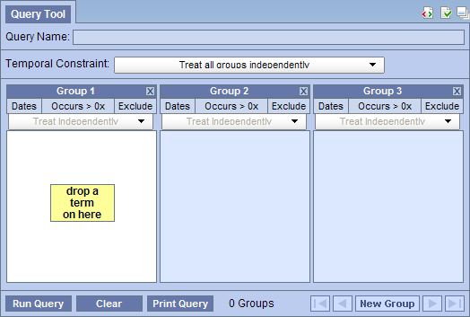
The query tool view can be broken down into several sections which are defined below.
The name of a query will be assigned when it is run and will display in the Query Name field.
The only time a query name will appear prior to running the query is when you drag a previous query from either the Previous Query or Workplace views and drop it into the Query Name field.
The Temporal Constraint is defined on the query level and depending on what is selected will set the default for the panel timing.
A panel is the section of the Query Tool view that contains information about a group of concepts. The panel can be broken down into the following sections.
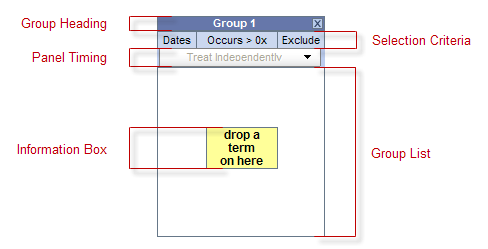
The heading is a label to easily identify the collection of concepts. Each heading will contain "Group" followed by a sequential number.
Example: Group 1, Group 2, Group 3, etc.
This area of the panel is used to define date selections and other constraints.
The Panel Timing defines the constraint on the panel level and uses the patients visits in determining eligibility.
This section contains the concepts that will be used during the process of querying the database.
The content in the information box will change depending on whether or not a concept is listed in the panel / group.
Once you add an item to a panel, an additional information box will appear between the two panels containing the text "AND". This is to indicate that each panel will be joined with an AND operator when the SQL query is created.
The toolbar is the bottom section of the Query Tool view that contains several buttons that perform various actions.

On the toolbar for the Query Tool there is a button for running and cancelling a query. Depending on the circumstances defined below the label on this button and its associated action will change to one of the following: (1) Run Query or (2) Cancel Query.
Clicking on the button labeld Run Query will run your query with the defined search criteria.
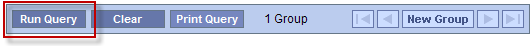
Once you start running a query, the label will change to Cancel Query. Clicking on the button when it says Cancel Query will cancel the query and free up the Query Tool / Web client so that you can continue to do other things.
Clicking on Cancel Query in the Query Tool will only cancel the web client piece of the process. The server side will continue to run.
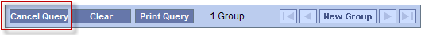
The Clear button will reset the view to the default; this includes deleting the concepts listed in the panel and removing any constraint that have been defined.
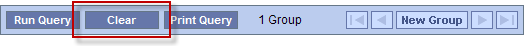
The Print button will open a window with the query information in a printable format.
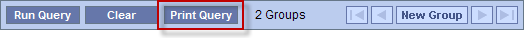
The Query Status view is located below the Query Tool view and contains information regarding the status of a query that is either running or has just finished.
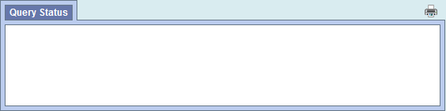
While a query is running you will see the name of the query and how long it has been running.
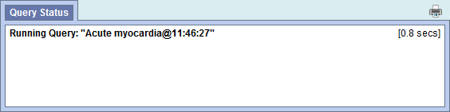
Once the query has finished, the number of patients and / or encounters meeting the search criteria will appear in this view. In addition to the totals for each result type you will also see the length of time it took to retrieve the requested information. This is a display only view.
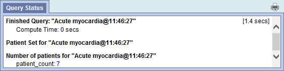
The result types that appear will depend on what you have selected when running the query.
Users can define how long to wait before a query will time out. This setting is defined in the Query Tool Options, which can be accessed by clicking on the Show Options button ( ).
).
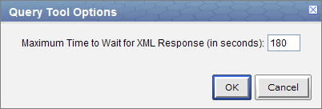
The default setting is 180 seconds, which means the web client will wait for a response from the server for 180 seconds. Once it reaches that time it will display a message saying the query has timed out and will continue to run in the background.
This section describes the process of adding items to the query tool, "AND" / "OR" operators and setting constraints.
In order to create your query, you will need to define what information will be retrieved from the databases. Selected items from other i2b2 Web Client views can be dragged and dropped (copied) into the Query Tool view.
Concepts ( ) can be defined as terms, results, providers, etc. They can be added as a group (folder (
) can be defined as terms, results, providers, etc. They can be added as a group (folder ( )) or individually by dragging the item(s) from Navigate Terms, Find Terms, and Workplace views.
)) or individually by dragging the item(s) from Navigate Terms, Find Terms, and Workplace views.
A new query can be created from one that has already been run by dragging the previous query( ) from Previous Query and Workplace views.
) from Previous Query and Workplace views.
There are two operators, known as SQL Logical Operators, which are necessary when running a query that has more than one concept. These operators provide a way to specify exactly what you want to retrieve. The operators are the 'AND' and 'OR' operators.
 The query tool knows which operator to use based on the panels used when defining the query. It is important to verify you are setting up your query correctly as each operator will return different results.
The query tool knows which operator to use based on the panels used when defining the query. It is important to verify you are setting up your query correctly as each operator will return different results.
The AND operator returns a record if both the first condition and the second conditions are true.
The query tool uses the AND operator when concepts are listed in different panels.
Example:
WHAT: Return only those patients who have Acute Myocardial Infarction AND Angina Pectoris.
HOW: In the query tool add the concept Acute Myocardial Infarction to Group 1 and then add the concept Angina Pectoris to Group 2.
RESULT: The population is limited by requiring the patients fulfill both requirements.
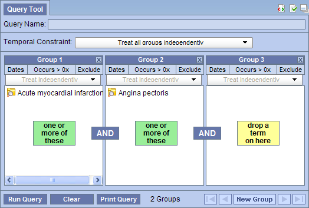
The OR operator returns a record if both the first condition or the second conditions are true.
The query tool uses the OR operator when concepts are listed in different panels.
Example:
WHAT: Return only those patients who have Acute Myocardial Infarction OR Angina Pectoris.
HOW: In the query tool add both concepts Acute Myocardial Infarction and Angina Pectoris to Group 1.
RESULT: The population is broadened to include all patients who fit either one of those criteria.
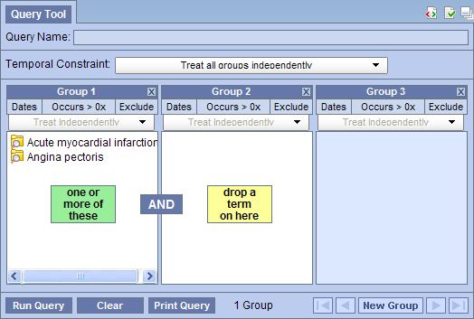
Concepts can be added to the Query Tool view by simply dragging the concept from one of the following views.
The Navigate Terms view contains a hierarchial display of all the concepts that can be used to search the database.
 How the items are grouped and displayed is dependent on how the database is setup.
How the items are grouped and displayed is dependent on how the database is setup.
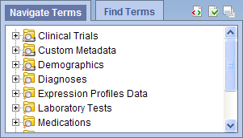
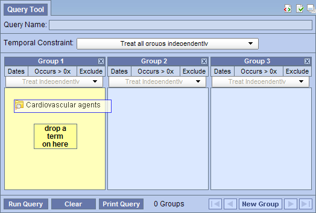
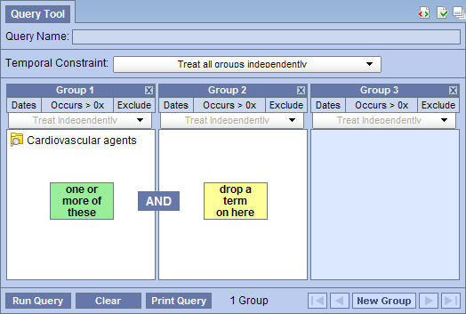
The Find Terms view provides a way to search for a particular concept.
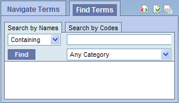
Information in the workplace is related to the most common concepts and queries that an individual uses and in essense becomes their personal workplace.

A previous query can be added to the Query Tool view by simply dragging the query name from one of the following views.
The Previous Query view displays the queries that were run by the user.
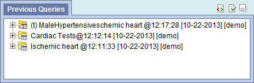

 When you run the query it will receive a new name. This is to distinguish the first previous query from the second.
When you run the query it will receive a new name. This is to distinguish the first previous query from the second.
Information in the workplace is related to the most common concepts and queries that an individual uses and in essense becomes their personal workplace.
 When you run the query it will receive a new name. This is to distinguish the first previous query from the second.
When you run the query it will receive a new name. This is to distinguish the first previous query from the second.
Three panels are typically displayed as part of the standard Query Tool view. Some complex queries may require the use of additional panels.
 In order to add a panel, the previous panels must contain at least one concept.
In order to add a panel, the previous panels must contain at least one concept.
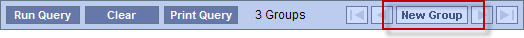
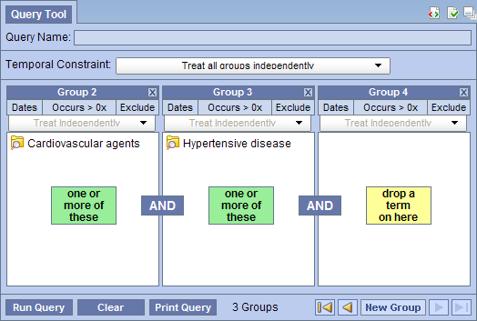
On the toolbar at the bottom of the view, there are additional navigational buttons that will become active when more than three panels are being used.
| Begin button | will move the display to show the first panel | |
| End button | will move the display to show the last panel in use | |
| Previous button | will move the display back one panel | |
| Next button | will move the display forward one panel |
There are three options for removing a concept from the Query Tool view. Users can (1) reset all the groups, (2) clear all items in a panel, or (3) delete an individual item from the group.
 Once you click on the clear button, all concepts in every group; and the constraints will be removed, therefore you need to make sure you want to delete ALL items.
Once you click on the clear button, all concepts in every group; and the constraints will be removed, therefore you need to make sure you want to delete ALL items.
Once you click on the delete button, all concepts listed in that one group; and the constraints will be removed, therefore you need to make sure you want to delete ALL items.
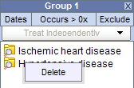
Once you click on the delete, any constraints specific to that item will be removed, therefore you need to make sure you want to delete that item.
Constraints are used to narrow down the search criteria to a particular time frame, number of occurrences or a specific value or range of values. In i2b2, there are several types of constraints that can be defined in the Query Tool view.
| Constraint Type | Description |
|---|---|
| Temporal | Constraint is defined on the query level and utilizes the patient encounters when determining eligibility. |
| Panel Timing | Constraint is defined on the panel level and utilizes the patient encounters when determining eligibility. |
| Date | Constraint uses a date range when determining eligibility. |
| Occurrence | Constraint is by the number of occurrences an item is documented. |
| Exclusion | Constraint will not include patients with teh concepts listed in the panel. |
| Value | Constraint is by the value associated to a concept. Not all concepts have values. |
Value constraints are currently the only ones that directly correspond to a single concept. All others are defined on the query or panel level.
Both temporal and panel constraints are very similar in that both utilize the visit / encounter information along with the concepts defined to determine if a patient meets the search criteria.
The main difference between a temporal and a panel timing constraint is that temporal constraints are defined at the query level and panel timing constraints are defined at the panel level.
As stated in the previous section the Temporal Constraint is defined at the query level.
Users can select one of two available options:
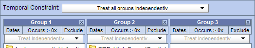
Example:
Patient has had a diagnosis of Acute MI and Type II Diabetes observed / documented at any time in their history.
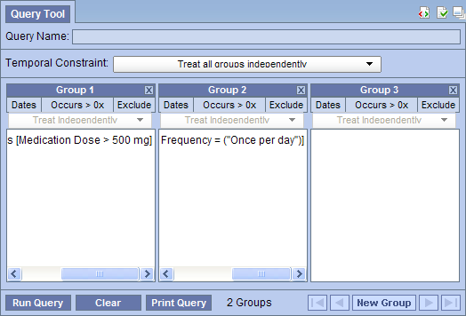
RESULTS: there are 3 patients who have had a diagnosis of both an acute MI and type II diabetes entered as a fact in the observation_fact table, where acute MI and type II diabetes have the same patient_num.
 The panel timing will override the temporal constraint setting.
The panel timing will override the temporal constraint setting.
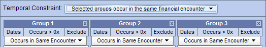
Example:
Patient has had a diagnosis of Acute MI and Type II Diabetes observed / documented during the same visit.
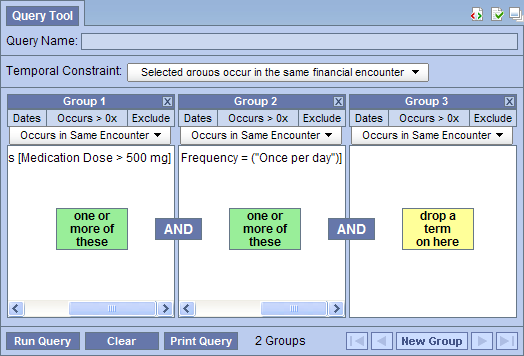
RESULTS: there are 2 patients who have had a diagnosis of both an acute MI and type II diabetes entered as a fact in the observation_fact table, where acute MI and type II diabetes have the same encounter_num.
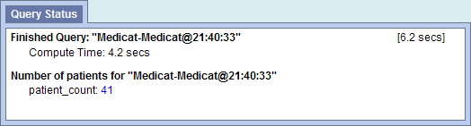
As stated in the previous section the Panel Timing Constraint is defined at the panel level and can only be changed when the temporal constraint is defined as Selected groups occur in the same financial encounter.
Users can select one of two available options:
The concepts (facts) listed in the panel can occur at any time in the patient's history.
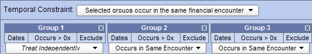
The concepts (facts) listed in the panel occur during same visit (financial encounter).
Users can define a date range to be used when querying the database. This date range can be in any one of the following combinations.
Only data with activity within the defined date range will be used.
Example:
Concept: Acute Myocardial Infarction
From date: 01/01/2001
To date: 12/31/2005
In this example, if a patient has a diagnosis of Acute Myocardial Infarction (MI) entered on their record from 01/01/2001 to 12/31/2005 then their data will be included. If the patient does have an MI diagnosis but it was entered prior to 01/01/2001 or after 12/31/2005 then their information will not be included.
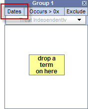
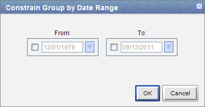
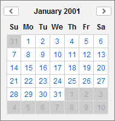
Once you click on the desired date the calendar window will close.
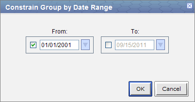
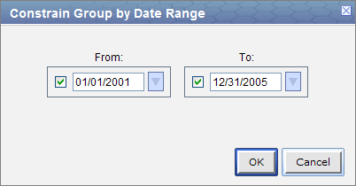

Data from the defined start date to the latest date available. No end date defined.
Example:
Concept: Acute Myocardial Infarction
From date: 01/01/2001
To date:
In this example, if a patient has a diagnosis of Acute Myocardial Infarction (MI) entered on their record any time on or after 01/01/2001 then their data will be included. If the diagnosis was entered prior to 01/01/2001 then it will not be included.
Once you click on the desired date the calendar window will close.
All data up until the defined end date. No start date defined.
Example:
Concept: Acute Myocardial Infarction
From date:
To date: 12/31/2005
In this example, if a patient has a diagnosis of Acute Myocardial Infarction (MI) entered on their record prior to and including 12/31/2005 then their data will be included. If the diagnosis was entered after 12/31/2005 then it will not be included.
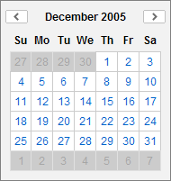
Once you click on the desired date the calendar window will close.
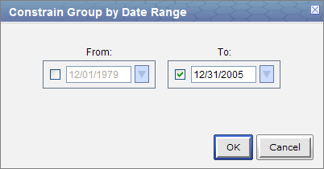
Users can define the number of times a concept hast to occur in order to be considered a positive "hit".
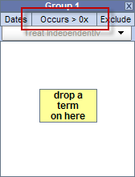
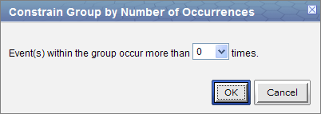
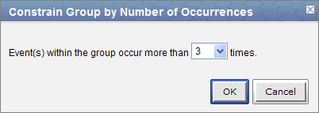
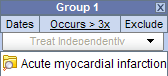
The exclude constraint will not include patients with the concept(s) listed in the panel.
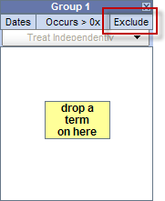
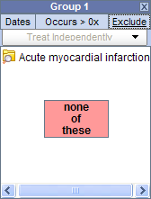
Not all concepts have values. For instance, the diagnosis of Acute Myocardial Infarction does not have a value but the tests used to make the diagnosis do have values (high, low, numeric, etc.).
For those concepts that do have values there are different types of values that may be associated with it.
Flags are defined in the source system when the value is entered. The following are some examples that can be found in the i2b2 Demo database.
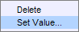
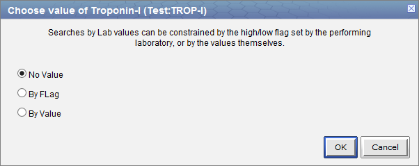
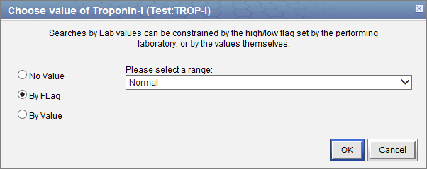
The text value is defined in the source system when the value is entered. The following are some examples that can be found in the i2b2 Demo database.
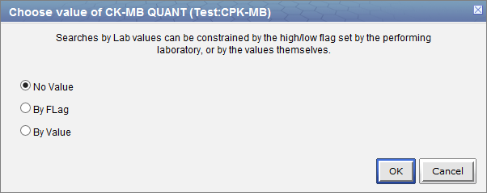
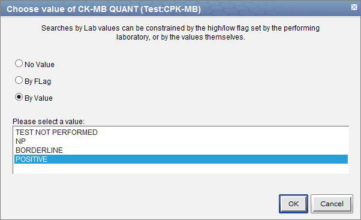
 To select more than one you can hold down the <Ctrl> key while clicking on each name. On the Macintosh you can click on the command key instead of the <Ctrl> key.
To select more than one you can hold down the <Ctrl> key while clicking on each name. On the Macintosh you can click on the command key instead of the <Ctrl> key.
The numeric value is defined in the source system when the result is entered. The following are some example formats that can be found in the i2b2 Demo database.
Unlike flag and text values, numeric values use operators, such as greater than or less than when setting the constraints. The following is a listing of operators currently in use.
| Operator | Description / Use |
|---|---|
| Less Than (<) | Any value less than the number entered. |
| Less Than or Equal To (<=) | Any value less than or equal to the number entered (inclusive). |
| Equal To (=) | An exact match to the number entered. |
| Between | Any value in the range of numbers entered. |
| Greater Than (>) | Any value greater than the number entered. |
| Greater Than or Equal To (>=) | Any value greater than or equal to the number entered (inclusive). |
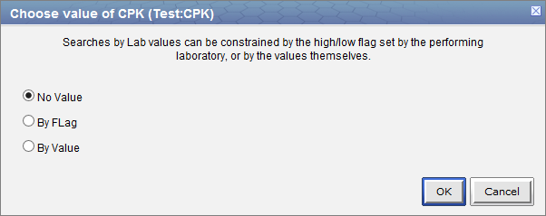
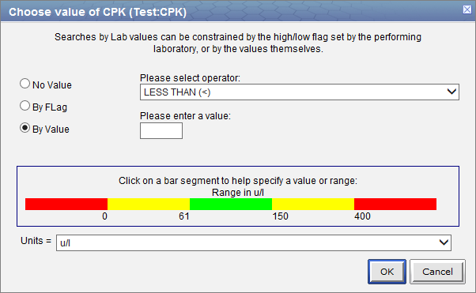
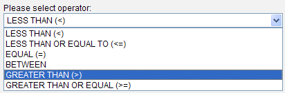

This section describes the process of running a query and the output.
When you run a query you need to select what type of result the server will return. There are several result types available, each of which will yield a different output.
| Patient Set | Provides a list of patients who met the search criteria. |
| Patient Count | Provides the total number of patients who met the search criteria. |
| Encounter Set | Provides the total number of encounters that met the search criteria. |
| Gender patient breakdown | Provides a breakdown of the patients by their gender. |
| Vital Status patient breakdown | Provides a breakdown of the patients by their vital status. |
| Race patient breakdown | Provides a breakdown of the patients by their race. |
| Age patient breakdown | Provides a breakdown of the patients by their age. |
The result type(s) will appear when you click on the Run Query button and they can be selected in any combination.
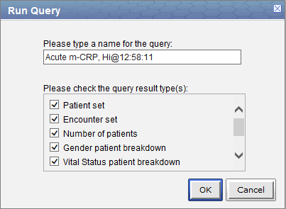
This option will return a set of patients who meet the defined criteria and will display the appropriate information in the following views.
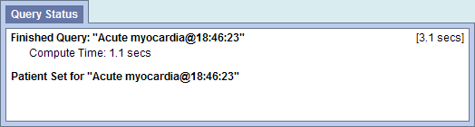
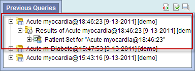
This option will return a total count for those patients who met the defined criteria and will display the appropriate information in the following views.
This option will return a set of encounters for those patients who meet the defined criteria and will display the appropriate information in the following views.
This option will return a breakdown by gender for those patients who met the defined criteria and will display the appropriate information in the following views.
This option will return a breakdown by vital status for those patients who met the defined criteria and will display the appropriate information in the following views.
This option will return a breakdown by race for those patients who met the defined criteria and will display the appropriate information in the following views.
This option will return a breakdown by age for those patients who met the defined criteria and will display the appropriate information in the following views.
Once the query criterion has been defined, the final steps are to click on the Run Query button, select the result type(s), and click on the OK button to run the query.
Once you begin the process of running the query the Query Status view will display "Running Query" and the name of the query.
To cancel a query you simply click on the Cancel Query button.
Keep in mind "Cancel Query" and the associated action will only appear when the query is still in the process of running.
This section describes the process of saving queries.
A previous query ( ) is created automatically when a query is run from the Query Tool. The query is stored in the database and displayed in the Previous Query view.
) is created automatically when a query is run from the Query Tool. The query is stored in the database and displayed in the Previous Query view.
Previous queries can also be seen in Workplace view if the user copied it to their workplace or shared folder in workplace view.
If the previous query does not appear in the list automatically you can refresh the view to update the list..
Users are able to print out the query information if they wish to have a hard copy of the search criteria defined for a query.
When printing a query you can either print the information for a current query or you can drag a previous query to the query tool view and print the information associated with that query.
The following steps outline the process of printing a query once you have the appropriate query in the Query Tool.